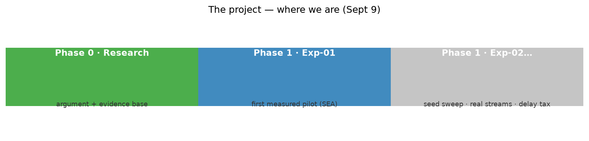
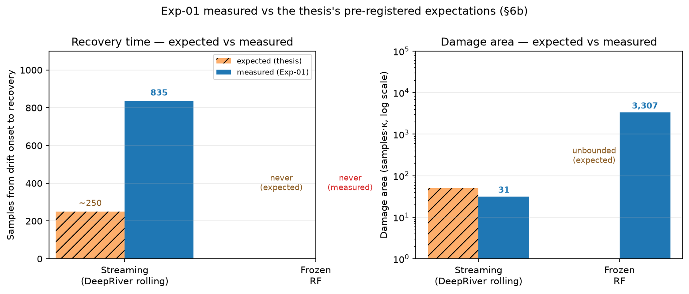

Milestone Report — Sept 9¶
Milestone summary: the project crosses from argument to measurement: the thesis is written down with pre-registered expectations, and the first atomic experiment (Exp-01) is run — it confirms the headline claim (a streaming deep learner recovers from drift in bounded time; a frozen batch model never does).
| Date | 2026-09-09 |
| Focus | Thesis written (Phase 0 → Phase 1) + Exp-01 first measured run |
| Primary docs | thesis.md · exp01-deepriver-vs-frozen-sea.md |
| Data artifact | experiments/exp01/results.json (repo root, next to the Exp-01 write-up) |
Why this milestone¶
The project's promise — "take models that are not streaming and beat them on real metrics" — was, until today, an argument backed by other people's papers. A milestone needs a measured data point of our own. This report records the state after the first two deliverables: the thesis (the argument, with falsifiable pre-registered expectations) and Exp-01 (the first run of the pilot that the thesis was designed around).
What was done¶
- Thesis written (thesis.md) — the idea ("batch models update on a clock, streaming models on evidence"), the mechanism, the facts-with-sources it rests on, the expected event sequence, and §6f: what would falsify it. Every illustrative number is marked as pre-registered.
- Exp-01 spec'd and run — one synthetic SEA stream, one abrupt drift at τ = 30,000, two models (DeepRiver rolling deep classifier, window 500, vs a frozen RandomForest), evaluated prequentially over 48,000 post-warm-up samples.
- Exp-01 data + figures committed —
experiments/exp01/results.json(per-sample rolling Kappa series + all metrics), rolling-Kappa curve and a damage-area summary chart inPhase1:Experimentation/figures/. - Environment hardened — Python pinned to 3.12 (deep-river's torch < 2.6 has no
cp313 wheels),
tool.uv.environmentsrestricted to Linux + Apple-Silicon (the Intel-Mac torch wheel was the resolution blocker), GPU auto-detected (RTX 3050). - Repo home cleaned up — root README rewritten as the project-vision page; the docs index now reflects Phase 1 as running, not starting.

Results — the numbers¶
Measured on seed 42, 60,000 samples (full series in experiments/exp01/results.json,
next to the write-up):
| Metric (post-warm-up, n = 48,000) | DeepRiver rolling | Frozen RF |
|---|---|---|
| Cumulative accuracy | 0.885 | 0.856 |
| Cumulative Cohen Kappa | 0.757 | 0.689 |
| Pre-drift baseline κ₀ | 0.755 | 0.759 |
| Min rolling Kappa after drift | 0.703 | 0.592 |
| Recovery time (samples from τ) | 835 | never (stream ends first) |
| Damage area (samples·κ) | 31 | 3,307 |
| DeepRiver loop runtime | 99 s on RTX 3050 (484 samples/s) | — (0.17 s fit) |
Two headline behaviours, both as the thesis predicted:

Measured, not schematic: rolling Cohen Kappa (w = 1,000) over the stream, drift at τ = 30,000. Before the drift both models sit at ≈ 0.75 — equal skill. After it, the frozen RF falls to ≈ 0.59 and never returns; DeepRiver dips briefly and is back inside its pre-drift band 835 samples later.

Pre-registration scorecard¶
The thesis's illustrative expectations (§6b, written before the run) vs what was measured:
| Claim (pre-registered) | Expected | Measured | Verdict |
|---|---|---|---|
| Streaming recovery time is bounded | ~250–350 samples (HAT/LB lines) | 835 samples (DeepRiver, rolling window) | PASS — same order of magnitude, inside the 5,000-sample falsification budget |
| Frozen RF never recovers | never | never (still depressed at stream end) | PASS |
| Frozen pays unbounded damage | unbounded | 3,307 samples·κ vs 31 | PASS (2 orders of magnitude) |
| Frozen wins cumulative accuracy (H2, honest control) | batch ahead in steady state | DeepRiver wins 0.757 vs 0.689 | REFUTED — streaming also wins the control; the pilot is stronger than pre-registered |
| Dip depth | streaming shallow, frozen deep | 0.052 vs 0.167 | PASS |

Issues faced & fixes¶
- Slow first run (~18 min CPU, 44 samples/s). The deep-river loop is per-sample windowed refit — genuinely expensive. Fixed by running the net on the RTX 3050: 99 s, ~11× faster (the script now auto-selects CUDA).
- A memorisation confound in the stream. river 0.25's SEA reseeds its RNG per generator, so concatenating two concepts replayed the identical feature vectors under the new label rule — the frozen RF had literally seen its "test" chunk during warm-up (it crashed only where it had memorised flipped labels). Fixed by drawing one continuous feature stream and switching only the label rule at τ. Lesson: check generator internals before trusting a "synthetic" stream.
- deep-river 0.3.4 bugs (two).
utils.estimator_checksimports pytest at package import time (missing dep — added); and_learnruns the forward beforemodule.train(), so cuDNN RNN backward crashes after a predict (worked around in the script). Documented in the exp01 write-up §2–3b. - The spec'd flattened MLP can't be a
RollingClassifier— its feature handling requires the input layer to taken_features, so the module is a small RNN head (16 hidden), which is the architecture deep-river documents for rolling models.
Status vs the plan¶
- The thesis's core falsifier is not triggered: streaming recovery (835) is bounded and ≪ any sane retrain interval; the frozen baseline's rolling Kappa did drop at drift (so there was real drift, not a dataset problem).
- Honest limits of this milestone: single seed, synthetic stream, no drift detector yet, no scheduled-retrain baseline. The measured 835 samples came from a rolling window alone — the detection-delay component (d) is still untested, and the no-drift control experiment is pending.
- The pipeline is now in place (data → artifact → figure → report), so the follow-ups are execution, not plumbing.
Next milestone¶
- Seed sweep (Exp-02): the same drift on ≥10 seeds → recovery time as a distribution (mean ± SD), not a single number.
- Baseline ladder: add scheduled-retrain batch (refit every k) and an oracle-tuned batch as the honest upper bound (Amekoe-style), so the frozen-only comparison broadens to the full thesis claim.
- Real streams (Elec2, Phishing, Covertype, Airlines, CreditCard) with the post-dip metric protocol.
- The Delay Tax experiment: label-delay sweep, where batch retraining starves and streaming must keep working on yesterday's labels.